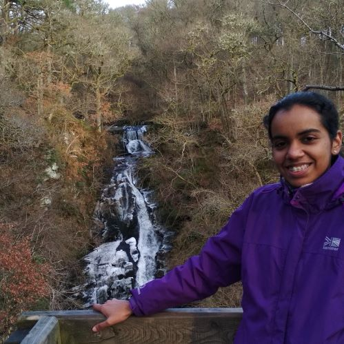

<!-- Twitter feed -->
<!-- <a class="twitter-timeline" data-height="1000" data-theme="dark" data-link-color="#19CF86" href="https://twitter.com/nmstreethran?ref_src=twsrc%5Etfw">Tweets by nmstreethran</a> <script async src="https://platform.twitter.com/widgets.js" charset="utf-8"></script> -->

<div align="center">
  <div class="author__avatar">
    
  </div>
  <div>
    <h1>Nithiya Streethran</h1>
    <p>Early-stage researcher in energy transitions and aspiring open energy modeller</p>
    <i class="fas fa-map-marker-alt"></i> <span>Norway</span>
    <br>
    <i class="fas fa-university"></i> <span>University of Stavanger</span>
    <br>
    <i class="fas fa-globe-europe"></i> <a href="https://ensystra.eu/">ensystra.eu</a>
  </div>
</div>